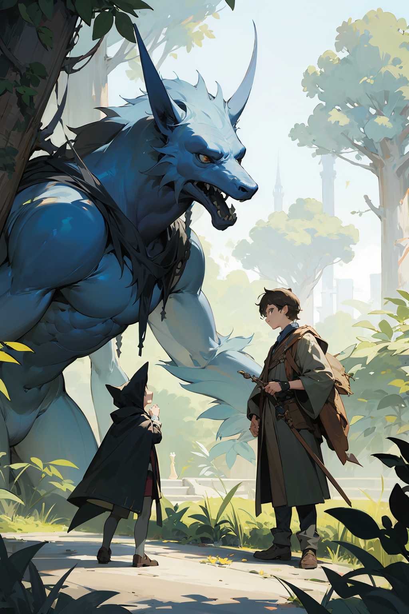

Capitulo 3
A medida que Mateo avanzaba por el jardín encantado, se encontró con una diversidad de seres mágicos, cada uno más fascinante que el anterior.
En una pradera luminosa, descubrió a los Luminis, pequeñas criaturas hechas de luz que revoloteaban como luciérnagas danzarinas. Emitían risas tintineantes y dejaban un rastro de chispas resplandecientes a su paso, iluminando el camino de Mateo con su resplandor mágico.
Al borde de un estanque cristalino, se topó con las Náyades, elegantes ninfas acuáticas con cabellos que fluían como corrientes de agua. Cantaban melodías etéreas mientras danzaban sobre las aguas, creando ondas que reflejaban los destellos de la luna incluso bajo la luz del sol.
En lo alto de un árbol antiguo, avistó a los Aéreos, criaturas aladas con plumajes resplandecientes. Sus canciones flotaban en el viento, mezclándose con el susurro de las hojas, mientras extendían sus alas iridiscentes en un baile celestial.
Caminando por un sendero cubierto de helechos mágicos, se cruzó con los Fungis, diminutos duendes de aspecto hongo que curioseaban entre las setas luminosas. Cada uno llevaba consigo un pequeño farol que iluminaba sus rostros traviesos y sus ojos centelleantes.
En la cima de una colina cubierta de flores perfumadas, descubrió a los Florantes, seres mitad planta y mitad hada, cuyos vestidos y alas estaban tejidos con pétalos y hojas. Danzaban con gracia al compás de la brisa, esparciendo esporas mágicas que llenaban el aire con fragancias embriagadoras.
Estos seres mágicos, cada uno único en su esplendor, saludaban a Mateo con curiosidad y amabilidad, ofreciéndole un vistazo al asombroso mundo que el jardín encantado guardaba celosamente.
